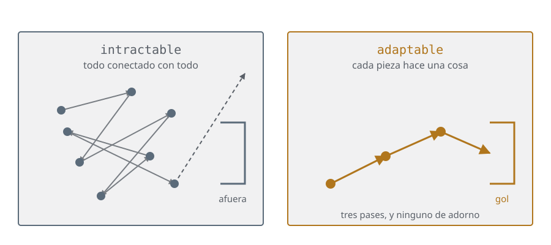
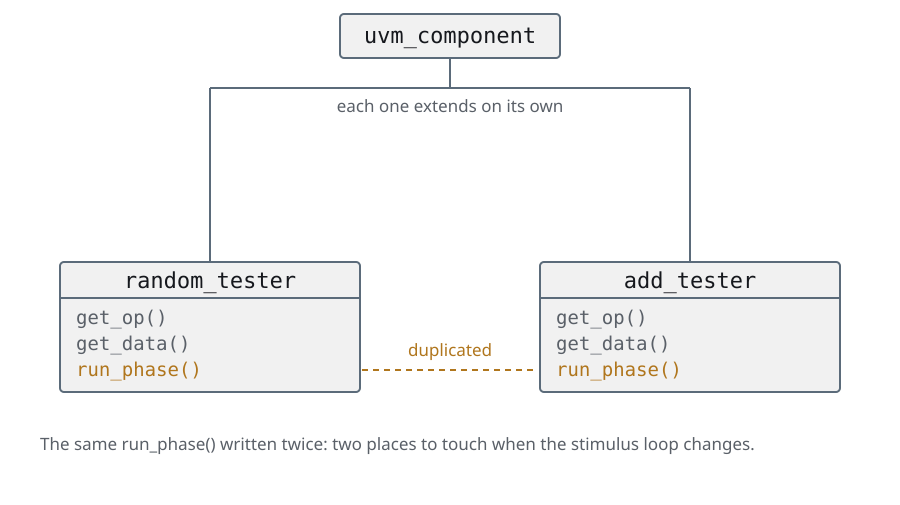
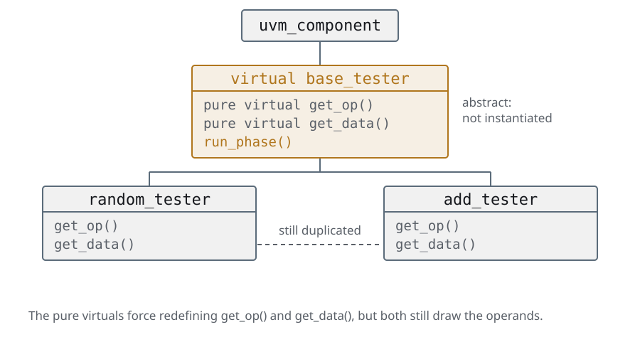
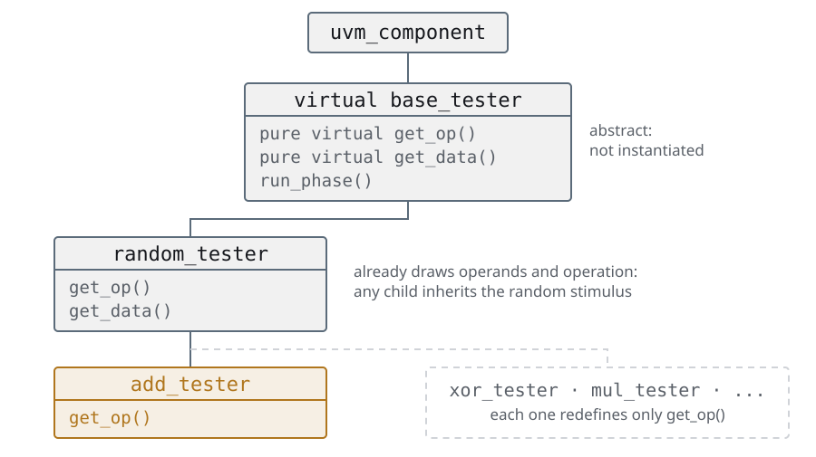
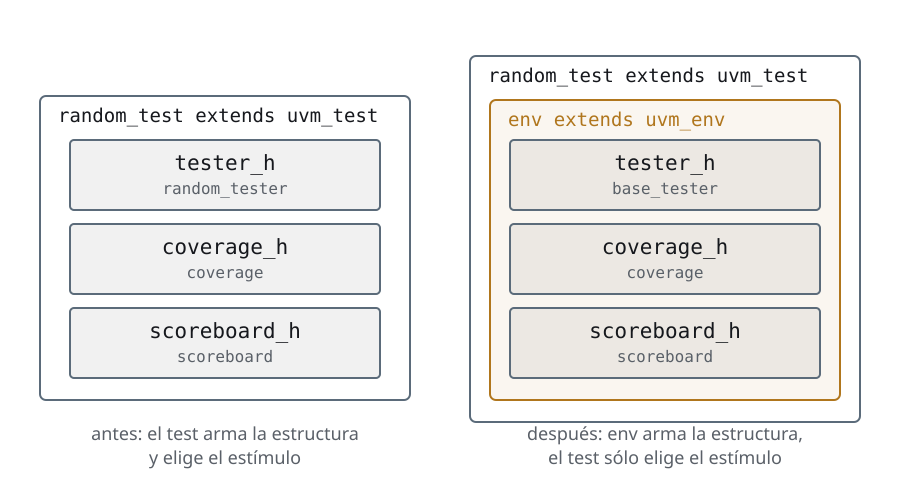
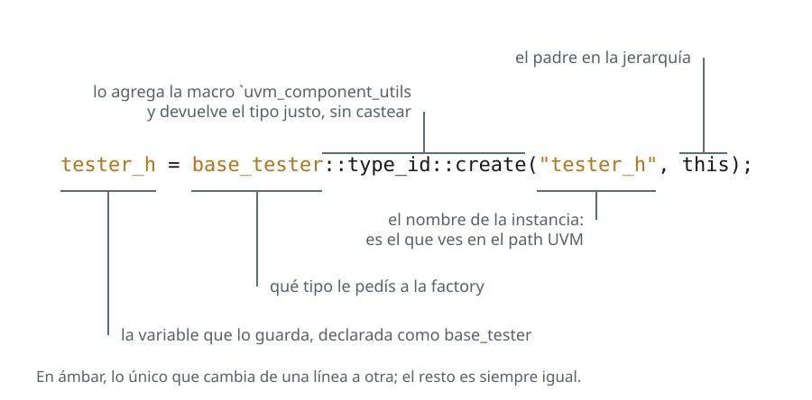
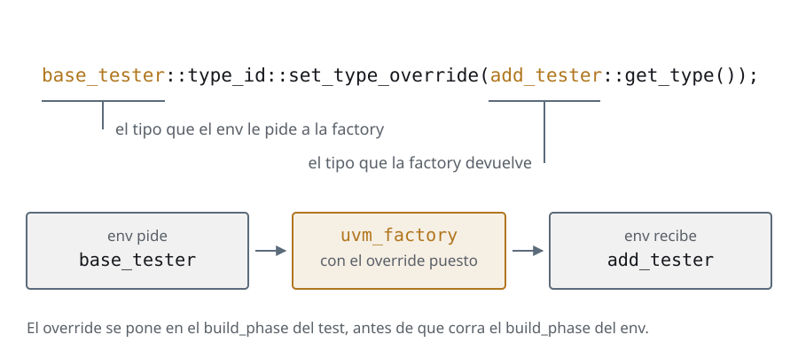
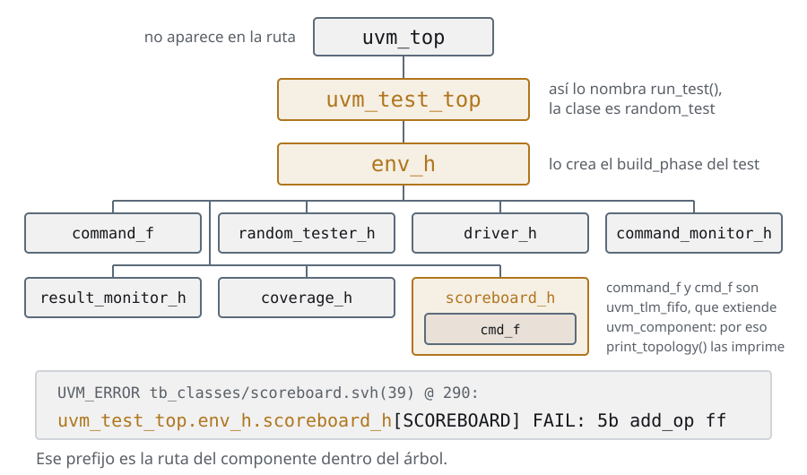

Día 3Entra UVM
Las mismas slides del deck, con las notas del instructor adentro del texto y el código completo. Si estás haciendo el curso solo, empezá por acá y tené el deck al lado para los repasos.
Agenda
Día 3 · ≈ 4 h 30 · unidad 4 · entra UVM
- Tests
- Components y fases
- El env: estructura y estímulo
- Reporting: verbosidad y actions
Tests
Compilar una vez, elegir el test por línea de comandos
- El testbench en objetos tiene el estímulo adentro: cambiar de test es cambiar código y volver a compilar
- Mil tests a cinco minutos de compilación cada uno son 5000 minutos: tres días y medio de máquina para no correr nada nuevo
- UVM da vuelta el orden: el testbench se compila una vez, y el test que corre se elige al arrancar la simulación
$ ./obj_dir/top/sim +UVM_TESTNAME=random_test
$ ./obj_dir/top/sim +UVM_TESTNAME=add_test # el mismo binario
- Eso es lo que se cobra en esta unidad, y lo que se paga con la ceremonia que viene: registro en la factory, constructor con firma fija y fases
La cuenta es el argumento comercial de UVM, y conviene decirla con los números
en la mano: no es que el testbench modular esté mal, es que no escala.
Si se puede, en vivo: compilar una vez y correr las dos líneas de arriba. Que
vean que la segunda no compila nada.
Lo que se cobra del testbench en objetos: el testbench ya está partido en tester,
coverage y scoreboard, y por eso se puede cambiar sólo el tester. Lo que se
paga adelante: en los components esas tres clases dejan de ser objetos sueltos que
el test hace new() y pasan a ser components del árbol.
Tests
El top: instanciar, publicar la interface, arrancar
code/u4/tests/top.sv · #run-test
initial begin
// null and "*": from the root and visible to the whole tree. See the
// uvm_config_db slide.
uvm_config_db#(virtual vtalu_bfm)::set(null, "*", "bfm", bfm);
// UVM reads +UVM_TESTNAME, and builds THAT test with the factory.
run_test();el archivo entero, 31 líneas
module top;
import uvm_pkg::*;
`include "uvm_macros.svh"
// Our classes and macros, same as in the modular version.
import vtalu_pkg::*;
`include "vtalu_macros.svh"
vtalu_bfm bfm ();
vtalu DUT (
.A(bfm.A),
.B(bfm.B),
.op(bfm.op_set),
.clk(bfm.clk),
.reset_n(bfm.reset_n),
.start(bfm.start),
.done(bfm.done),
.ovf(bfm.ovf),
.result(bfm.result)
);
initial begin
// null and "*": from the root and visible to the whole tree. See the
// uvm_config_db slide.
uvm_config_db#(virtual vtalu_bfm)::set(null, "*", "bfm", bfm);
// UVM reads +UVM_TESTNAME, and builds THAT test with the factory.
run_test();
end
endmodule : top- El
topsigue siendo un módulo: instancia el BFM y el DUT igual que antes. Lo único nuevo son estas dos líneas run_test()sin argumento significa "el que diga+UVM_TESTNAME". Con un argumento —run_test("random_test")— ése pasa a ser el default, y+UVM_TESTNAMElo sigue pisando desde la línea de comandos- Antes de
run_test()no hay ningún objeto de UVM vivo: por eso elsetva acá
La virtual interface se pasa por el config_db porque las clases no ven las
señales del módulo: bfm vive en top, y random_test es un objeto que se
crea en tiempo de simulación. No hay forma de pasárselo por el constructor —
el de uvm_component sólo acepta name y parent.
Vale la pena señalar el orden: primero el set, después run_test(). Al revés
el test se construye antes de que el dato esté en la base y el get falla con
el fatal. Es un error que se ve poco porque casi nadie escribe el top al revés,
pero explica por qué el set no puede ir en un initial aparte.
La slide que sigue es la que hay que explicar bien: es el error número uno del
que arranca con UVM.
Tests
uvm_config_db: el buzón del testbench
- Base de datos global y tipada: el
#(...)es parte de la llave - Cuatro argumentos: ámbito (
cntxt,inst_name), nombre y dato - El ámbito es una ruta jerárquica, y ahí está toda la gracia
code/u4/tests/config_db.svh// -- IN THE TOP -- top is a module, not a uvm_component ---------------------
// cntxt = null : the scope starts at the UVM root
// inst = "*" : visible to the whole component tree
uvm_config_db #(virtual vtalu_bfm)::set(null, "*", "bfm", bfm);
// -- IN A COMPONENT -- always inside build_phase ----------------------------
// cntxt = this : the scope is the hierarchical path of THIS component
// inst = "" : with no suffix, the path is exactly the component's
if (!uvm_config_db #(virtual vtalu_bfm)::get(this, "", "bfm", bfm))
`uvm_fatal("DRIVER", "Failed to get BFM")
// The 3rd argument ("bfm") is the NAME of the datum inside the database.
// If the string in the set and the one in the get are not identical, this still
// compiles and blows up at run time with a null pointer.Los dos primeros argumentos son dónde, el tercero es qué. En el set del
top va null, "*" porque top es un módulo, no está en el árbol de UVM: la
traducción es "desde la raíz, visible para todos".
En el get va this, "", o sea "yo". Vale la pena escribir en el pizarrón la
ruta que sale: uvm_test_top.env_h.driver_h.
Y el atajo que hay que desaconsejar de entrada: get(null, "*", ...) también
compila y también anda — busca en todo el árbol y se queda con lo primero que
encuentra. Con una sola interface no se nota nunca. El día que el testbench
tiene dos, el driver del bus A puede terminar manejando el bus B, y no falla:
miente. Es de esos errores que se pagan tres meses después.
Tests
Un test en tres partes: 1 · registrarlo
code/u4/tests/tb_classes/random_test.svh · #class-headclass random_test extends uvm_test;
`uvm_component_utils(random_test);
virtual vtalu_bfm bfm;el archivo entero, 41 líneas
// The first UVM test of the course. The five steps this class puts together
// --registration, constructor, build_phase, run_phase and objections-- are
// explained one by one in the slides of unit 11.
class random_test extends uvm_test;
`uvm_component_utils(random_test);
virtual vtalu_bfm bfm;
function new(string name, uvm_component parent);
super.new(name, parent);
endfunction : new
// The get goes in build_phase and not in the constructor: when the
// constructor runs, the tree does not exist yet.
function void build_phase(uvm_phase phase);
if (!uvm_config_db#(virtual vtalu_bfm)::get(this, "", "bfm", bfm))
`uvm_fatal("RANDOM TEST", "Failed to get BFM")
endfunction : build_phase
task run_phase(uvm_phase phase);
random_tester random_tester_h;
coverage coverage_h;
scoreboard scoreboard_h;
phase.raise_objection(this);
random_tester_h = new(bfm);
coverage_h = new(bfm);
scoreboard_h = new(bfm);
fork
coverage_h.execute();
scoreboard_h.execute();
join_none
random_tester_h.execute();
phase.drop_objection(this);
endtask : run_phase
endclassrandom_testextiendeuvm_test, que extiendeuvm_component: es un nodo del árbol, no un objeto suelto- La macro
`uvm_component_utilslo **inscribe en la factory**. Sin esa línea,+UVM_TESTNAME=random_testno encuentra nada y UVM aborta - El handle a la virtual interface se declara acá y se llena en el
build_phase: son dos momentos distintos
Es la primera vez que aparece la factory en serio, y todavía no se ve para qué sirve: acá sólo hace de directorio de nombres. La segunda mitad —crear por tipo y poder sustituirlo desde afuera— llega en el env con los overrides. El punto y coma después de la macro sobra y UVM lo tolera. Está en el código del libro y lo dejamos igual para que el que compare no se maree, pero si alguien pregunta: no hace falta.
Tests
2 · el constructor y el build_phase
code/u4/tests/tb_classes/random_test.svh · #constructor-and-build function new(string name, uvm_component parent);
super.new(name, parent);
endfunction : new
// The get goes in build_phase and not in the constructor: when the
// constructor runs, the tree does not exist yet.
function void build_phase(uvm_phase phase);
if (!uvm_config_db#(virtual vtalu_bfm)::get(this, "", "bfm", bfm))
`uvm_fatal("RANDOM TEST", "Failed to get BFM")
endfunction : build_phaseel archivo entero, 41 líneas
// The first UVM test of the course. The five steps this class puts together
// --registration, constructor, build_phase, run_phase and objections-- are
// explained one by one in the slides of unit 11.
class random_test extends uvm_test;
`uvm_component_utils(random_test);
virtual vtalu_bfm bfm;
function new(string name, uvm_component parent);
super.new(name, parent);
endfunction : new
// The get goes in build_phase and not in the constructor: when the
// constructor runs, the tree does not exist yet.
function void build_phase(uvm_phase phase);
if (!uvm_config_db#(virtual vtalu_bfm)::get(this, "", "bfm", bfm))
`uvm_fatal("RANDOM TEST", "Failed to get BFM")
endfunction : build_phase
task run_phase(uvm_phase phase);
random_tester random_tester_h;
coverage coverage_h;
scoreboard scoreboard_h;
phase.raise_objection(this);
random_tester_h = new(bfm);
coverage_h = new(bfm);
scoreboard_h = new(bfm);
fork
coverage_h.execute();
scoreboard_h.execute();
join_none
random_tester_h.execute();
phase.drop_objection(this);
endtask : run_phase
endclass- El constructor de un
uvm_componenttiene firma fija:nameyparent, en ese orden, ysuper.new(name, parent)como primera línea - El
getdel config_db va enbuild_phase, no en el constructor: cuando corre el constructor el árbol todavía se está armando if (!get(...)) uvm_fatal: elgetdevuelve un bit. Ignorarlo deja el handle ennully la falla aparece cien líneas después, en otro archivo
La firma fija es lo primero que rompe todo el mundo: un constructor con un
argumento de más y la factory no lo puede crear, porque llama siempre con
(name, parent).
build_phase es una fase, no una función que llames vos: UVM la recorre
top-down sobre el árbol ya armado. En este test todavía no se nota, porque el
árbol es un solo nodo; en los components, cuando el env construye sus hijos, el
orden top-down es lo que hace que el padre exista antes que el hijo.
El fatal no es paranoia: sin él, un typo en el nombre del dato —"bfm" contra
"BFM"— da una simulación que corre, no manda un solo estímulo y termina con 0
errores.
Tests
3 · el run_phase: acá pasa la simulación
code/u4/tests/tb_classes/random_test.svh · #run_phase task run_phase(uvm_phase phase);
random_tester random_tester_h;
coverage coverage_h;
scoreboard scoreboard_h;
phase.raise_objection(this);
random_tester_h = new(bfm);
coverage_h = new(bfm);
scoreboard_h = new(bfm);
fork
coverage_h.execute();
scoreboard_h.execute();
join_none
random_tester_h.execute();
phase.drop_objection(this);
endtask : run_phaseel archivo entero, 41 líneas
// The first UVM test of the course. The five steps this class puts together
// --registration, constructor, build_phase, run_phase and objections-- are
// explained one by one in the slides of unit 11.
class random_test extends uvm_test;
`uvm_component_utils(random_test);
virtual vtalu_bfm bfm;
function new(string name, uvm_component parent);
super.new(name, parent);
endfunction : new
// The get goes in build_phase and not in the constructor: when the
// constructor runs, the tree does not exist yet.
function void build_phase(uvm_phase phase);
if (!uvm_config_db#(virtual vtalu_bfm)::get(this, "", "bfm", bfm))
`uvm_fatal("RANDOM TEST", "Failed to get BFM")
endfunction : build_phase
task run_phase(uvm_phase phase);
random_tester random_tester_h;
coverage coverage_h;
scoreboard scoreboard_h;
phase.raise_objection(this);
random_tester_h = new(bfm);
coverage_h = new(bfm);
scoreboard_h = new(bfm);
fork
coverage_h.execute();
scoreboard_h.execute();
join_none
random_tester_h.execute();
phase.drop_objection(this);
endtask : run_phase
endclass- Es el mismo cuerpo que el
execute()del testbench en objetos: tester, coverage y scoreboard, con los dos observadores enfork ... join_none - Lo que cambia es quién lo llama: antes lo llamaba el módulo
top, ahora lo llama UVM cuando le toca a la fase de run - Las dos líneas nuevas son el
raisey eldropde la objection, que son las que deciden cuándo termina todo
Conviene mostrarlo al lado del tb.execute() del testbench en objetos: el estímulo no
cambió ni una línea. Lo único que hicimos fue moverlo adentro de una clase que
UVM sabe crear y llamar. Ese es todo el trabajo de esta unidad.
join_none y no join: coverage y scoreboard son bucles infinitos que miran
las señales. Si esperáramos a que terminen, no termina nunca.
Y el que se pierde: la simulación no dura lo que dura el run_phase, dura lo
que duran las objections. Eso es lo que viene ahora.
Tests
Objections: quién decide cuándo termina
task run_phase(uvm_phase phase);
phase.raise_objection(this); // "todavia tengo trabajo"
... // el estimulo
phase.drop_objection(this); // "listo, por mi que termine"
endtask
- Todos los
run_phasecorren en paralelo: ninguno puede decidir solo cuándo terminar. UVM cuenta, y la fase termina cuando cae la última objection - Sin
raise_objectionla simulación se termina en el tiempo 0, y el test pasa con 0 errores sin haber mandado un estímulo - Sin
drop_objectionno termina nunca: no hay error, la simulación sigue corriendo sola - Los dos síntomas son mudos, y por eso existen dos plusargs:
+UVM_OBJECTION_TRACEdice quién la levantó y quién la bajó, y+UVM_TIMEOUTle pone un techo a la corrida
Es el mecanismo que decide cuánto dura la simulación, y es el que produce los
dos cuelgues clásicos de la primera semana. Vale escribir las dos fallas en el
pizarrón, porque el alumno las va a ver antes que a cualquier bug del DUT.
La regla práctica: la objection la levanta el que tiene trabajo, y la baja
el mismo. En este curso siempre es el test. Nunca la levantes en un
componente y la bajes en otro — eso es cómo se cuelga un testbench de verdad.
Y falta un tercer participante, que es la slide que sigue: la objection sabe
cuándo el test terminó de mandar, no cuándo el scoreboard terminó de
comparar. Ésa es la diferencia que paga el drain_time.
Y el enganche del día 6: set_automatic_phase_objection(1) es esto mismo, hecho
por el sequencer en vez de por el test.
Tests
El final que no es el final: drain_time
- La objection dice "terminé de mandar". No dice "terminé de comparar": entre las dos hay un scoreboard con una FIFO adentro y resultados que el DUT todavía no contestó
- Cuando cae la última objection la fase corta en ese instante: lo que
quedó en vuelo no llega, nadie lo compara, y el resumen dice
UVM_ERROR : 0
task run_phase(uvm_phase phase);
phase.get_objection().set_drain_time(this, 200ns); // un colchon tras el ultimo drop
phase.raise_objection(this);
... // el estimulo
phase.drop_objection(this);
endtask
- El
drain_timees un número elegido a ojo. La versión con criterio esphase_ready_to_end(): UVM la llama cuando cayó la última objection, y el componente que todavía tiene trabajo levanta una más y la fase sigue - Es el bug de la segunda semana, y es mudo: no hay error, no hay cuelgue, y las últimas transacciones nunca se compararon
Es la contracara de la slide anterior y conviene decirlo con esas palabras: la
objection mide el estímulo, no el análisis. El test sabe cuándo terminó de
mandar; el scoreboard es el que sabe cuándo terminó de comparar, y nadie le
preguntó.
El drain_time es la respuesta barata y alcanza para el 90 % de los casos: un
colchón fijo después del último drop_objection, en el orden de lo que tarda el
DUT en contestar. En este curso serían un par de ciclos; en un bus con latencia,
lo que diga la spec.
phase_ready_to_end() es la respuesta cara y la que se usa en un testbench
serio, porque no es un número: el scoreboard mira su propia FIFO, y si le quedan
items levanta una objection más. La forma es siempre la misma —chequear
phase.get_name() == "run", y levantar sólo si de verdad falta algo—, y hay que
decir la trampa: si el que la implementa nunca la baja, colgó la fase.
La tercera pieza, para el que quiera engancharse justo en ese instante, es
all_dropped: un callback del objeto objection que se dispara cuando la cuenta
llega a cero.
Y el enganche hacia adelante: el scoreboard con FIFO de los analysis ports es
exactamente el caso de esta slide, y el capstone lo pisa de nuevo.
Tests
El segundo test: lo mismo, con otro tester
code/u4/tests/tb_classes/add_test.svh · #run_phase task run_phase(uvm_phase phase);
add_tester add_tester_h;
coverage coverage_h;
scoreboard scoreboard_h;
phase.raise_objection(this);
add_tester_h = new(bfm);
coverage_h = new(bfm);
scoreboard_h = new(bfm);
fork
coverage_h.execute();
scoreboard_h.execute();
join_none
add_tester_h.execute();
phase.drop_objection(this);
endtask : run_phaseel archivo entero, 37 líneas
class add_test extends uvm_test;
`uvm_component_utils(add_test);
virtual vtalu_bfm bfm;
function new(string name, uvm_component parent);
super.new(name, parent);
endfunction : new
// Same build_phase as random_test: the virtual interface is read from the
// config_db, with this and "" as the scope. See random_test.svh.
function void build_phase(uvm_phase phase);
if (!uvm_config_db#(virtual vtalu_bfm)::get(this, "", "bfm", bfm))
`uvm_fatal("ADD TEST", "Failed to get BFM")
endfunction : build_phase
task run_phase(uvm_phase phase);
add_tester add_tester_h;
coverage coverage_h;
scoreboard scoreboard_h;
phase.raise_objection(this);
add_tester_h = new(bfm);
coverage_h = new(bfm);
scoreboard_h = new(bfm);
fork
coverage_h.execute();
scoreboard_h.execute();
join_none
add_tester_h.execute();
phase.drop_objection(this);
endtask : run_phase
endclassadd_testesrandom_testcon una línea distinta:add_testeren lugar derandom_tester. Todo lo demás se repite tal cual- Esa repetición es real y es fea, y es la deuda que paga los components: cuando
el testbench sea un árbol de components, el test va a construir un
envy no va a tocar el estímulo - Por ahora vale la pena que se vea copiada: es el problema que motiva lo que sigue
No hay que disculpar la duplicación, hay que señalarla. El alumno tiene que
terminar esta slide con la sensación de "esto no puede ser así", porque esa
sensación es exactamente el motivo de los components y del env.
Si alguien se adelanta y propone una clase base con el run_phase común y un
método virtual para elegir el tester: está bien, y es más o menos lo que hace
base_test en las sequences. Decírselo y seguir.
Tests
Cómo se corre, y qué imprime
code/u4/tests/run.sh · #the-runset -e
. "$(dirname "${BASH_SOURCE[0]}")/../../verilator/common.sh"
vlt_uvm top --coverage-user -Wno-fatal -f dut.f -f tb.f
run_sim +UVM_TESTNAME=random_test
run_sim +UVM_TESTNAME=add_test
cov_reportel archivo entero, 14 líneas
#!/bin/bash
# Runs the example with Verilator. See docs/verilator.md.
#
# --coverage-user: measures the covergroups and leaves out line/toggle/branch,
# which are not the topic. The number comes out at the end, with cov_report.
#
# -Wno-fatal: the examples have sloppy widths on purpose (WIDTHEXPAND/WIDTHTRUNC)
# and by default any warning stops the build. They still get printed.
set -e
. "$(dirname "${BASH_SOURCE[0]}")/../../verilator/common.sh"
vlt_uvm top --coverage-user -Wno-fatal -f dut.f -f tb.f
run_sim +UVM_TESTNAME=random_test
run_sim +UVM_TESTNAME=add_test
cov_reportcode/u4/tests/output.txt · líneas 1-13 de 27UVM_INFO @ 0: reporter [RNTST] Running test random_test...
UVM_INFO $UVM_HOME/src/base/uvm_report_server.svh(1009) @ 46340: reporter [UVM/REPORT/SERVER]
--- UVM Report Summary ---
** Report counts by severity
UVM_INFO : 1
UVM_WARNING : 0
UVM_ERROR : 0
UVM_FATAL : 0
** Report counts by id
[RNTST] 1
- $UVM_HOME/src/base/uvm_root.svh:633: Verilog $finish
- S i m u l a t i o n R e p o r t: Verilator 5.052 2026-09-05
- Verilator: $finish at 46nsel archivo entero, 27 líneas
UVM_INFO @ 0: reporter [RNTST] Running test random_test...
UVM_INFO $UVM_HOME/src/base/uvm_report_server.svh(1009) @ 46340: reporter [UVM/REPORT/SERVER]
--- UVM Report Summary ---
** Report counts by severity
UVM_INFO : 1
UVM_WARNING : 0
UVM_ERROR : 0
UVM_FATAL : 0
** Report counts by id
[RNTST] 1
- $UVM_HOME/src/base/uvm_root.svh:633: Verilog $finish
- S i m u l a t i o n R e p o r t: Verilator 5.052 2026-09-05
- Verilator: $finish at 46ns
seed: la de Verilator por defecto, que tambien es fija
UVM_INFO @ 0: reporter [RNTST] Running test add_test...
UVM_INFO $UVM_HOME/src/base/uvm_report_server.svh(1009) @ 40540: reporter [UVM/REPORT/SERVER]
--- UVM Report Summary ---
** Report counts by severity
UVM_INFO : 1
UVM_WARNING : 0
UVM_ERROR : 0
UVM_FATAL : 0
** Report counts by id
[RNTST] 1
- $UVM_HOME/src/base/uvm_root.svh:633: Verilog $finish
- S i m u l a t i o n R e p o r t: Verilator 5.052 2026-09-05
- Verilator: $finish at 41ns- Un solo
vlt_uvm, dosrun_sim: una compilación, dos tests. Eso es todo lo que promete la unidad, y acá está hecho [RNTST] Running test random_test...es UVM diciendo qué encontró en la factory con el nombre que le pasaste- El Report Summary con
UVM_ERROR : 0es el veredicto: reporting lo desarma y explica de dónde sale cada fila
Vale correrlo en vivo y cronometrar: la compilación tarda minutos, los dos
run_sim tardan segundos. Ése es el número que justifica toda la ceremonia de
la unidad.
El $finish at 46ns del final es del primer test; el add_test termina en 41 ns.
Los dos mandan la misma cantidad de operaciones, pero la multiplicación toma más
ciclos que la suma, así que el tiempo depende de qué salió al azar.
Y una advertencia útil: UVM_ERROR : 0 quiere decir "nadie llamó a
uvm_error", no "el DUT está bien". Acá el scoreboard sí reporta con
`uvm_error, así que la cuenta vale — pero un scoreboard que nunca recibe
nada da exactamente el mismo cero. Reporting muestra cómo distinguirlos.
Tests
Resumen de la unidad
- El testbench se compila una vez y el test se elige por línea de comandos:
+UVM_TESTNAME=random_test. Ése es todo el negocio de la sección - La cuenta que lo justifica: mil tests a cinco minutos de compilación cada uno son tres días y medio de esperar a que compile
- El
topsigue siendo un módulo. Publica la BFM en eluvm_config_dbantes derun_test(), porque antes de esa línea no hay un solo objeto de UVM vivo - El
uvm_config_dbes una base de datos global y tipada: el#(...)es parte de la llave, y el ámbito es una ruta jerárquica - Un test se registra con
`uvm_component_utils. Sin esa línea, la factory no lo encuentra y UVM aborta - La virtual interface se declara en la clase y se llena en el
build_phase: son dos momentos distintos, y confundirlos deja unnull - La objection dice cuándo el test terminó de mandar, no cuándo el scoreboard
terminó de comparar. Esa diferencia se paga con
drain_time, o bien conphase_ready_to_end()
Cierre de la primera unidad de UVM de verdad. Vale reconocer la incomodidad en
voz alta: hoy pusieron mucha ceremonia para hacer lo mismo que ya hacían. Lo que
compraron es el primer bullet, y no se cobra hasta que hay dos tests — que es el env.
El error que se van a comer y conviene anticipar: el get() que se olvida de
chequear el valor de retorno. No falla, miente: deja la virtual interface en
null y el testbench se cae tres capas más abajo. Por eso todos los get del
curso van adentro de un if con su uvm_fatal.
Components y fases
Un component es lo que está en el árbol, y al árbol lo recorre UVM
Un testbench tiene tres cosas distintas: la estructura —qué partes hay y cómo se conectan—, las secuencias —qué comandos, en qué orden— y los datos. Esta unidad es la primera; las otras dos son el día 6
En los tests el test hacía
new()de tres objetos sueltos y los llamaba él mismo. Eso no es una estructura: es una función largaUn
uvm_componentes un nodo con nombre y con padre. UVM arma el árbol completo y después lo recorre entero llamando fases, en un orden que garantizaConvertir una clase en component son cuatro pasos, siempre los mismos:
- extender
uvm_componento una hija suya - registrarla con
`uvm_component_utils() - el constructor mínimo:
(string name, uvm_component parent) - override de las fases que le hagan falta
- extender
La frase de la slide es la que ordena la unidad: un component es lo que está en
el árbol. Todo lo demás —el nombre, el padre, las fases, el print_topology de
los agents— sale de ahí.
La consecuencia práctica que hay que decir en voz alta: si algo no es un
component, UVM no lo ve. No lo construye, no le llama fases y no aparece en la
topología. Más adelante vamos a tener objetos que a propósito no son
components —las transactions— y ahí la distinción se cobra.
Los tres ejes —estructura, secuencias, datos— valen como mapa del resto del
curso: components y env son estructura, transactions son datos, sequences son
secuencias.
Components y fases
Intro UVM phases
Todos los uvm components tienen estos phase methods por herencia
UVM crea el TB y va llamando estos métodos en orden
Las fases son métodos: se overridean como cualquier otro método virtual. Si además conviene llamar a
super, es tema de la slide que siguefunction void build_phase(uvm_phase phase): UVM crea el TB (top-down). Los componentes UVM se instancian en este método. Si tratás de instanciarlos en otro lado es error
function void connect_phase(uvm_phase phase): Conexión de componentes
function void end_of_elaboration_phase(uvm_phase phase): UVM lo llama una vez que creó y conectó todos los componentes
task run_phase(uvm_phase phase): UVM ejecuta esta task en su propio thread. Todos los run_phase se ejecutan simultáneamente
function void report_phase(uvm_phase phase): Se ejecuta cuando se termina la última objection del test. Muestra Resultados
Tres cosas que hay que decir sí o sí: build_phase es top-down, connect_phase es bottom-up, y todos los run_phase corren en paralelo, cada uno en su thread. Y el error clásico: instanciar componentes fuera de build_phase. UVM no te avisa amablemente.
Components y fases
¿Y el super.build_phase()?
// uvm_component.svh — uvm-core 2020.3.1, tal cual
function void uvm_component::build_phase(uvm_phase phase);
build(); // -> apply_config_settings(): la config automatica
endfunction
function void uvm_component::connect_phase(uvm_phase phase);
connect(); // -> return; esta vacia, igual que las demas
endfunction
build_phasees la única fase que hace algo enuvm_component: aplica los campos registrados con`uvm_field_*. El curso no usa esas macros- Ojo, hay dos
superdistintos: ése, y el de una clase base tuya, que construye lo que vos escribiste. El segundo el curso sí lo llama - Afuera: ponelo siempre, salvo que puedas nombrar por qué en tu caso es un
no-op. De más no cuesta nada; de menos —un
`uvm_field_*, o heredar deuvm_agent— el campo queda en su default y nadie te avisa - Y el orden importa: lo que tenga que estar decidido antes de construir los
hijos va antes del
super. Elset_type_overridedeadd_testes eso
Esta slide existe porque el alumno va a ver super.build_phase(phase) en todo el
material de internet y en la mayoría de los build_phase del curso no está. La
respuesta honesta no es "se olvidaron": es que sin las macros de campo la llamada
al de uvm_component no hace nada.
Los números, para que nadie tenga que creernos:
grep -rn 'super\.build_phase' code/ da once llamadas reales —más tres
comentarios que hablan de ellas— sobre 122 build_phase. Las once llaman al
super de un base_test o un random_test nuestro, que construye el env.
Ninguna llama al de uvm_component, que es de lo que habla la slide.
La otra diferencia de fondo: hay dos formas de configurar un componente. La
automática (`uvm_field_* + config_db, magia por macros) y la manual
(uvm_config_db::get() en el build_phase, que es la que usa el curso). La manual
es más código y muchísimo más fácil de debuggear — las macros de campo generan
cientos de líneas que no vas a leer nunca.
Por qué la recomendación de afuera es la contraria a lo que hace el curso: el
modo de falla es asimétrico. Ponerlo de más es cero efecto. No ponerlo cuando
hacía falta es silencio: el campo queda en su default y la simulación corre.
Este curso puede nombrar por qué en su caso es un no-op —no hay una sola macro
`uvm_field_* en code/, verificalo—; el que entra a un testbench ajeno no
puede. uvm_agent es el contraejemplo que tenemos a mano: es la única clase de
la librería, además de uvm_component, que implementa build_phase, y lo que
hace ahí es leer is_active. Vuelve en el día 6.
Con las otras fases pasa lo mismo, más barato todavía: en uvm_component son
return;, pero uvm_driver::end_of_elaboration_phase chequea que el
seq_item_port esté conectado, y ése lo extendemos nosotros.
Components y fases
El cuadro completo: son nueve, no cinco
| Fase | Para qué | Orden |
|---|---|---|
build_phase |
instanciar los componentes | top-down |
connect_phase |
conectar los ports | bottom-up |
end_of_elaboration_phase |
jerarquía lista, antes de simular | bottom-up |
start_of_simulation_phase |
último aviso antes del tiempo 0 | bottom-up |
run_phase |
task: acá pasa la simulación | un thread c/u |
extract_phase |
juntar los datos de la corrida | bottom-up |
check_phase |
decidir si pasó o no | bottom-up |
report_phase |
imprimir el veredicto | bottom-up |
final_phase |
cerrar archivos y salir | top-down |
- El curso usa cinco. Las otras cuatro existen, están vacías, y las vas a ver
La tabla está para que nadie se vaya creyendo que UVM tiene cinco fases: tiene
nueve comunes y doce runtime. El curso usa cinco porque con un solo agent
alcanza, y eso hay que decirlo — no es que las otras no importen.
Las tres que más se van a cruzar afuera: start_of_simulation_phase es donde la
gente imprime el banner de configuración del test; check_phase es donde un
scoreboard prolijo decide el veredicto, en vez de contar errores sobre la
marcha; y report_phase es la que ya vieron.
Que extract / check / report estén separadas tiene una razón concreta: son
bottom-up, así que un scoreboard hijo termina de extraer antes de que el env
padre decida. Si hacés las tres cosas en report_phase, perdés esa garantía.
La pregunta que ordena la tabla: ¿por qué build_phase es top-down?
Porque un padre tiene que existir para poder crear a sus hijos. Las del medio
necesitan lo contrario — que los hijos ya estén. La otra top-down es
final_phase, que cierra el árbol en el mismo orden en que se construyó.
Components y fases
Y adentro del run_phase, un cronograma
reset configure main shutdown
pre post pre post pre post pre post
- En paralelo con
run_phase, UVM recorre doce fases runtime, todastask, en ese orden - Están para coordinar componentes de equipos distintos sin banderas a mano:
nadie manda tráfico en
mainhasta que todos terminaronreset - Cada una tiene su propio objection, con la regla de los tests: una fase runtime sin objection termina en cuanto arranca
- El curso usa
run_phasey nada más — con un solo agent no hay nada que coordinar. Pero eldefault_sequencedel día 6 se engancha amain_phase
Esta slide existe para que main_phase no aparezca por primera vez en el día 6.
La distinción exacta, que confunde a todo el mundo: run_phase y el cronograma
reset → configure → main → shutdown corren a la vez, no uno adentro del
otro. Un componente puede implementar cualquiera de los dos caminos; lo que no
conviene es mezclarlos en el mismo testbench, porque después nadie sabe qué
corre cuándo.
La pregunta honesta es "¿y entonces cuál uso?". Para un testbench de un solo
bloque, run_phase, que es lo que hace el curso. El cronograma se gana el
sueldo en integración: el agent del bus de configuración termina su configure
y recién ahí el de datos arranca su main, sin que ninguno de los dos equipos
haya tenido que escribir un uvm_event ni una bandera compartida.
Components y fases
El scoreboard, ahora como component
code/u4/components/tb_classes/scoreboard.svh · #class-and-build// The scoreboard of unit 10, now as a uvm_component. The four steps
// --extend, register, constructor, phases-- are in the slides of unit 12.
class scoreboard extends uvm_component;
`uvm_component_utils(scoreboard);
virtual vtalu_bfm bfm;
function new(string name, uvm_component parent);
super.new(name, parent);
endfunction : new
// Self-sufficient: the component asks the config_db for the BFM. Before, the
// test passed it in through the constructor, and the test had to receive it
// only to hand it out.
function void build_phase(uvm_phase phase);
if (!uvm_config_db#(virtual vtalu_bfm)::get(this, "", "bfm", bfm))
`uvm_fatal("SCOREBOARD", "Failed to get BFM")
endfunction : build_phaseel archivo entero, 51 líneas
// The scoreboard of unit 10, now as a uvm_component. The four steps
// --extend, register, constructor, phases-- are in the slides of unit 12.
class scoreboard extends uvm_component;
`uvm_component_utils(scoreboard);
virtual vtalu_bfm bfm;
function new(string name, uvm_component parent);
super.new(name, parent);
endfunction : new
// Self-sufficient: the component asks the config_db for the BFM. Before, the
// test passed it in through the constructor, and the test had to receive it
// only to hand it out.
function void build_phase(uvm_phase phase);
if (!uvm_config_db#(virtual vtalu_bfm)::get(this, "", "bfm", bfm))
`uvm_fatal("SCOREBOARD", "Failed to get BFM")
endfunction : build_phase
// run_phase is the only phase that is a task: the only one that consumes
// time. UVM launches it in its own thread.
task run_phase(uvm_phase phase);
shortint predicted_result;
bit predicted_ovf;
forever begin : self_checker
@(posedge bfm.done) #1;
case (bfm.op_set)
add_op: predicted_result = bfm.A + bfm.B;
sub_op: predicted_result = bfm.A - bfm.B;
and_op: predicted_result = bfm.A & bfm.B;
xor_op: predicted_result = bfm.A ^ bfm.B;
mul_op: predicted_result = bfm.A * bfm.B;
endcase // case (op_set)
// ovf belongs to sub and to nobody else: with 8-bit inputs and a 16-bit
// output, neither the addition nor the multiplication can overflow.
predicted_ovf = (bfm.op_set == sub_op) && (bfm.A < bfm.B);
if ((bfm.op_set != no_op) && (bfm.op_set != rst_op))
if (predicted_result != bfm.result || predicted_ovf != bfm.ovf)
`uvm_error("SCOREBOARD", $sformatf(
"FAILED: A: %0h B: %0h op: %s result: %0h ovf: %0b",
bfm.A,
bfm.B,
bfm.op_set.name(),
bfm.result,
bfm.ovf
))
end : self_checker
endtask : run_phase
endclass : scoreboard- Los cuatro pasos, en orden: extiende
uvm_component, se registra, constructor(name, parent), y override debuild_phase - El cambio de fondo no se ve en el diff: antes el test recibía la BFM y se la pasaba al scoreboard por el constructor. Ahora el scoreboard se la pide solo al config_db
- El
run_phasees elexecute()del testbench en objetos sin tocar una coma: el chequeo no cambió, cambió quién lo arranca
El punto de la slide es la autosuficiencia. Un componente que necesita que
alguien le pase sus dependencias obliga a que ese alguien las conozca, y el test
termina siendo un repartidor de handles que no usa. Con el config_db, el test no
sabe que el scoreboard necesita una BFM.
Eso es exactamente lo que hace que el env pueda existir: si
cada componente se configura solo, el padre sólo tiene que construirlo.
El precio también hay que decirlo: la dependencia dejó de estar en el
constructor, donde se veía, y pasó a un string. "bfm" mal escrito compila. Por
eso el if (!get(...)) uvm_fatal no es opcional.
Components y fases
El test construye el árbol y se va
code/u4/components/tb_classes/random_test.svhclass random_test extends uvm_test;
`uvm_component_utils(random_test);
random_tester tester_h;
coverage coverage_h;
scoreboard scoreboard_h;
// Components get instantiated in build_phase, never in the constructor.
function void build_phase(uvm_phase phase);
tester_h = new("tester_h", this);
coverage_h = new("coverage_h", this);
scoreboard_h = new("scoreboard_h", this);
endfunction : build_phase
function new(string name, uvm_component parent);
super.new(name, parent);
endfunction : new
// No run_phase: the test's job ends once the tree is built.
endclass- Los tres
new("nombre", this)son lo que crea el árbol:thises el padre, y el string es el nombre que va a salir enprint_topologyy en cada mensaje - Van en
build_phasey en ningún otro lado. En el constructor todavía no hay jerarquía; después debuild_phase, UVM ya siguió random_testno tienerun_phase: su trabajo terminó cuando el árbol quedó armado. Los tres hijos tienen el suyo, y corren en paralelo
Es el cambio de mentalidad de la unidad, y conviene decirlo con estas palabras:
el test dejó de hacer el test. Ahora lo arma y se corre a un costado.
La objection también se mudó: ya no la levanta el test, la levantan los
componentes que tienen trabajo — o, en este ejemplo, el tester. Vale mostrar
random_tester.svh un segundo para que se vea.
Y la trampa que va a aparecer sola: new() acá funciona porque el tipo está
escrito en la declaración. En el env eso se reemplaza por
type_id::create(), y ése es el cambio que habilita los overrides. Todavía no,
pero conviene sembrarlo.
Components y fases
El segundo test: hereda, y aun así copia
code/u4/components/tb_classes/add_test.svh// add_test extends random_test, redeclares tester_h with another type and
// REWRITES the whole build_phase. That duplication is the problem unit 13 solves
// with the factory override.
class add_test extends random_test;
`uvm_component_utils(add_test);
add_tester tester_h;
function new(string name, uvm_component parent);
super.new(name, parent);
endfunction : new
function void build_phase(uvm_phase phase);
tester_h = new("tester_h", this);
coverage_h = new("coverage_h", this);
scoreboard_h = new("scoreboard_h", this);
endfunction
endclassadd_testextienderandom_test, así que heredacoverage_hyscoreboard_h. Sólo redeclaratester_h, con otro tipo- Pero el
build_phaseestá escrito de nuevo entero, y las tres líneas son idénticas salvo una. Heredar la clase no alcanzó para heredar la estructura - Y hay algo peor escondido:
add_tester tester_h;tapa altester_hde la clase base. Son dos variables distintas con el mismo nombre - Es el mismo problema de los tests, disfrazado. El env lo resuelve de verdad: una estructura, y la factory sustituye la pieza que cambia
Ésta es la slide que hay que dejar incómoda. Si el alumno sale pensando "esto
sigue estando mal", el env se explica sola.
El shadowing del handle merece un minuto: en la clase base hay un
random_tester tester_h y acá un add_tester tester_h. Cualquier método
heredado de random_test que use tester_h va a ver el de la base, que quedó en
null. Acá no molesta porque no hay ninguno, pero es una bomba de tiempo y es
exactamente el tipo de error mudo que el curso persigue.
El enganche: en el env no hay dos tests, hay uno; y add_test pasa a ser una
línea de set_type_override_by_type.
Components y fases
Resumen de la unidad
- Un
uvm_componentes un nodo con nombre y con padre. UVM arma el árbol con esos dos datos y después lo recorre solo - Convertir una clase en component son cuatro pasos, siempre los mismos: extender, registrar con la macro, el constructor de dos argumentos, y las fases
- Las fases son métodos virtuales que UVM llama en orden:
build_phase(top-down),connect_phase,end_of_elaboration_phase,run_phase,report_phase - Los componentes se instancian en el
build_phasey en ningún otro lado - Todos los
run_phasecorren en paralelo, cada uno en su thread. Ninguno decide solo cuándo termina la simulación: eso son las objections - Hay dos
super.build_phase(): el deuvm_componenty el de tu clase base. Ponelo siempre, salvo que puedas nombrar por qué en tu caso es un no-op
La unidad que convierte el testbench en algo que UVM puede recorrer, y con eso
aparecen las herramientas que no existían antes: print_topology() muestra el
árbol, y el uvm_config_db puede usar rutas porque ahora hay rutas.
El super.build_phase() merece la vuelta que le dimos porque es la pregunta más
repetida de los foros. Lo que hay que dejar dicho es la asimetría: no llamarlo
apaga la asignación automática de los campos registrados con `uvm_field_*,
y eso no da error, da un default. Este curso no usa esas macros y por eso puede
no llamarlo; el alumno que cae en un testbench ajeno no sabe si puede, así que
lo pone. Lo que no es válido es hacer media cosa de cada una.
El env: estructura y estímulo
Dos cosas que cambian por motivos distintos
- Un testbench tiene estructura —qué componentes hay y cómo se conectan— y estímulo —qué se le manda al DUT—
- Cambian por motivos distintos y a ritmos distintos: la estructura cambia cuando cambia el diseño; el estímulo, cada vez que escribís un test
- Hasta los components están pegados:
add_testes una copia derandom_testcon una línea cambiada. Diez tests son diez copias, y un cambio en la estructura son diez ediciones - Esta sección los separa en dos clases: el
uvm_envse queda con la estructura, eluvm_testcon el estímulo - Y la pieza que lo hace posible es la factory: el
envpide unbase_testergenérico, y cada test le dice a la factory cuál entregar
Sección bisagra del curso, y la frase que hay que dejar es ésta: lo que cambia junto va junto, lo que cambia por separado va separado. Todo lo que viene después —agents, sequences— es esta misma operación aplicada a otra cosa. Si el grupo viene lento, ésta es la unidad donde conviene gastar el tiempo que sobre, aunque haya que sacarlo de otro lado. Un alumno que no entienda por qué el env y el test son dos clases no va a poder leer ningún testbench de producción, porque todos están armados así. La pregunta para arrancar, antes de mostrar una línea de código: si mañana el diseño suma una segunda interface, ¿cuántos de tus diez tests hay que tocar? Ninguno, si la estructura vive en un solo lugar. Los diez, si cada test la arma.
El env: estructura y estímulo
Intractable vs. adaptable
“Jugar al fútbol es muy simple, pero jugar un fútbol simple es lo más difícil que hay.” — Johan Cruyff

- Intractable es el código que sale rápido y después no se deja tocar. El criterio no es estético: otra persona lo va a modificar, y esa persona vas a ser vos dentro de un año, sin acordarte de nada
- Tres reglas para dar vuelta el TB del VTALU: una clase, una cosa; nada hardcodeado; programar contra la interface, no contra la implementación
Cambiale fútbol por testbench y la frase de Cruyff es la unidad entera.
Las tres reglas suenan a póster de oficina hasta que se las mide, así que
conviene aterrizarlas en el testbench que tienen delante:
Una clase, una cosa — el random_test de los components hace dos: arma la
estructura y elige el estímulo. Por eso hay que copiarlo para hacer add_test.
Nada hardcodeado — tester_h = new(...) clava el tipo en esa línea. El
type_id::create() no.
Contra la interface — el env va a pedir un base_tester, que es una clase
abstracta: no sabe ni le importa cuál llega.
Y una advertencia honesta, porque en el trabajo se abusa de esto: código
adaptable no quiere decir código preparado para todo. Cada punto de
flexibilidad se paga en indirección, y la indirección se paga a las tres de la
mañana. Se separa lo que ya se demostró que cambia — y acá se demostró: son dos
tests y ya hay copia y pega.
El env: estructura y estímulo
El problema: dos testers, dos veces el mismo run_phase()

- Hoy hay dos testers:
random_testermanda mil operaciones al azar,add_testermanda mil sumas. Los dos randomizan A y B igual - Los dos extienden
uvm_componentpor separado, y cada uno tiene suget_op(), suget_data()y surun_phase() - El
get_op()es lo único que cambia. Elrun_phase()—elrepeat(1000), el handshake con la BFM, el#500del final— está escrito dos veces - Duplicar el bucle no es feo, es caro: el día que cambie el protocolo del BFM, hay que acordarse de los dos
Ésta es la slide del problema, y conviene no adelantar la solución: que se vea la
duplicación primero.
La pregunta que la ordena: ¿qué parte de un tester es el test, y qué parte es
infraestructura? El get_op() es el test —cuatro líneas—; todo el resto es
infraestructura que no tiene nada que ver con qué querés probar.
Y el criterio general, que vale para cualquier lenguaje: cuando dos clases
hermanas comparten un método idéntico, el método está en el lugar equivocado.
Va al padre.
El env: estructura y estímulo
La salida: una clase abstracta, y el estímulo en las hijas

base_testeres una clase abstracta: escribe elrun_phase()una sola vez —mil operaciones— y lo arma llamando aget_op()yget_data()- Esos dos métodos son
pure virtual, así que la clase no se puede instanciar y toda hija está obligada a definirlos. La que se olvide, no compila - Pero todavía queda código repetido: los dos testers randomizan los operandos igual, y eso es señal de que falta un escalón en la jerarquía
Acá se cobra polimorfismo: base_tester es una clase abstracta con métodos
pure virtual, o sea que el run_phase() está escrito una sola vez y las
hijas están obligadas a definir get_op() y get_data(). Si una se olvida, no
compila — que es el argumento entero de aquella unidad.
Y de paso se arregla la trampa del ejercicio del día 2: acá get_op() sí es
virtual, porque es pure virtual. Vale volver dos días atrás y mostrarlo.
El bullet que importa es el último, y es el que empuja a la slide siguiente: los
dos testers siguen randomizando los operandos igual. Que dos hermanas compartan
código es señal de que falta un escalón en la jerarquía — y el escalón es que
add_tester no herede de base_tester sino de random_tester.
El env: estructura y estímulo
El resultado: la jerarquía de tres pisos

base_testerpone elrun_phase()y declaraget_op()yget_data()comopure virtual. Nadie lo instanciarandom_testerbaja un escalón y define las dos: operación al azar, operandos al azaradd_testerhereda derandom_tester, no debase_tester: se queda con los operandos random y sólo redefineget_op()- Y el mismo escalón sirve para todos los que vengan:
xor_tester,mult_tester,maxmult_tester. Cada uno, una línea útil
El salto que hay que señalar es el de la tercera flecha: add_tester no hereda
del abstracto, hereda del concreto. Es contraintuitivo la primera vez y es la
decisión que hace que el test nuevo cueste cuatro líneas.
La regla, dicha de una forma que se recuerde: heredás de quien tiene lo que no
querés volver a escribir. No del que "conceptualmente corresponde".
Y el enganche hacia atrás: esto es polimorfismo usado en serio. pure virtual en
el padre es lo que garantiza que ningún tester se olvide de definir get_op() —
y si se olvida, no compila.
El env: estructura y estímulo
add_tester
- El resultado es que add_tester es muy simple: hereda de random_tester y sólo redefine get_op()
code/u4/env/tb_classes/add_tester.svhclass add_tester extends random_tester;
`uvm_component_utils(add_tester)
function operation_t get_op();
bit [2:0] op_choice;
return add_op;
endfunction : get_op
function new(string name, uvm_component parent);
super.new(name, parent);
endfunction : new
endclass : add_testerÉsta es la slide de la sección que conviene dejar un rato en pantalla: un test
entero del VTALU son cuatro líneas útiles. Todo lo demás —mandar mil
operaciones, randomizar operandos, hablar con la BFM— ya está escrito y no se
toca.
La regla que se lleva: si agregar un test cuesta cuatro líneas, vas a escribir
muchos. Si cuesta copiar una clase de sesenta, vas a escribir tres y después
inventar excusas. La cobertura del proyecto se decide acá, no en el covergroup.
Y la pregunta que ordena la jerarquía: ¿por qué add_tester hereda de
random_tester y no de base_tester? Porque quiere los operandos random y sólo
cambia la operación. La herencia no se elige por parecido conceptual, se elige
por qué querés no volver a escribir.
El env: estructura y estímulo
La otra mitad: quién instancia a quién
- Los testers ya están bien repartidos. Falta la otra mitad: quién los instancia
- La salida obvia es una familia de
uvm_test, uno por tester. Y es la mala: mirá elrandom_testde abajo - Instancia los tres componentes y elige el tester. Cada test nuevo copia esa estructura entera para cambiar una línea
code/u4/components/tb_classes/random_test.svhclass random_test extends uvm_test;
`uvm_component_utils(random_test);
random_tester tester_h;
coverage coverage_h;
scoreboard scoreboard_h;
// Components get instantiated in build_phase, never in the constructor.
function void build_phase(uvm_phase phase);
tester_h = new("tester_h", this);
coverage_h = new("coverage_h", this);
scoreboard_h = new("scoreboard_h", this);
endfunction : build_phase
function new(string name, uvm_component parent);
super.new(name, parent);
endfunction : new
// No run_phase: the test's job ends once the tree is built.
endclass- El
random_testhace dos cosas: arma la estructura del testbench y elige qué estímulo mandar. Son dos motivos de cambio en una sola clase - UVM parte eso en dos: la estructura se muda a un
uvm_env, y al test le queda sólo elegir el estímulo - Un
envtípico define dos métodos y nada más:build_phasepara instanciar yconnect_phasepara conectar
Vale hacer la cuenta en voz alta, porque el problema se ve mejor con números que
con el argumento de diseño: si cada test instancia sus tres componentes, con diez
tests hay diez build_phase que dicen lo mismo. El día que se agrega un cuarto
componente al testbench, son diez ediciones — y la que te olvidás no falla al
compilar, simplemente corre sin ese componente.
uvm_env no es magia ni trae comportamiento nuevo: es un uvm_component con
otro nombre. Lo que aporta es convención: cuando alguien abre un testbench
UVM ajeno, sabe que la estructura está en el env. Eso es la mitad del valor de
UVM y conviene decirlo así de crudo — no es la librería, es que todos ponen las
cosas en el mismo lugar.
Buena pregunta: ¿por qué el env casi nunca tiene run_phase? Porque no manda ni
mira nada; sólo construye y conecta. Si tu env tiene un run_phase, es señal de
que se metió lógica de test adentro de la estructura.
El env: estructura y estímulo
El mapa después de separar

- Dos jerarquías paralelas, y ésa es toda la sección: a la izquierda los tests
—el estímulo—, a la derecha el
envy sus componentes —la estructura— - El
enves uno solo y no se toca. Los tests son muchos y cambian siempre - Lo único que los une es la factory: el test dice "cuando pidan un
base_tester, dales éste"
Vale dejar el diagrama en pantalla y pedir que ubiquen dónde quedó cada clase de
los components. El ejercicio hace que se note lo que desapareció: ya no hay un
build_phase por test que instancie tres componentes.
La pregunta de control: si mañana el testbench suma un cuarto componente,
¿cuántos archivos se tocan? Uno, el env. Con la estructura de los components eran
tantos como tests hubiera.
El env: estructura y estímulo
La clase env: instanciar y conectar, nada más
- El
envdefine la estructura del testbench: instancia los componentes y después los conecta. Es uno solo, y no cambia de un test a otro - Los tests, en cambio, son muchos y cambian siempre. Ésa es toda la división
- El
build_phase()no usanew(): cada componente se pide contype_id::create(), que es la fórmula de la factory de la slide que sigue
code/u4/env/tb_classes/env.svh// The structure of the TB, and nothing else: it instantiates the components and
// connects them. Which tester arrives is the test's call, with a factory override. Unit 13.
class env extends uvm_env;
`uvm_component_utils(env);
base_tester tester_h;
coverage coverage_h;
scoreboard scoreboard_h;
function void build_phase(uvm_phase phase);
// base_tester is abstract and this works anyway: create() does not build
// it, it asks the factory what to hand out when somebody asks for a base_tester.
tester_h = base_tester::type_id::create("tester_h", this);
coverage_h = coverage::type_id::create("coverage_h", this);
scoreboard_h = scoreboard::type_id::create("scoreboard_h", this);
endfunction : build_phase
function new(string name, uvm_component parent);
super.new(name, parent);
endfunction : new
endclassSección bisagra del curso: separar QUÉ estructura tiene el testbench (env) de QUÉ estímulo se manda (test). Todo lo que viene después —agents, sequences— es esta misma idea llevada más lejos. Si el grupo viene lento, ésta es la slide donde conviene gastar el tiempo que sobre.
El env: estructura y estímulo
La factory de UVM: la clase se anota sola
- La factory tenía dos molestias: había que castear el resultado, y
había que editar el
casede la fábrica para agregar un tipo - La de UVM no tiene ninguna de las dos. Una clase se registra sola, con una
macro en su primera línea:
`uvm_component_utils()para lo que va en el árbol`uvm_object_utils()para lo que no —las transactions—
- Y devuelve un objeto del tipo correcto, sin castear:
type_ides una clase distinta por cada clase registrada, así que el tipo lo pone el compilador
La macro es lo que reemplaza al case de la fábrica escrita a mano: cada clase se anota sola en el diccionario, y agregar un tipo no obliga a
editar la fábrica.
La diferencia entre las dos macros es la que se cobra en las transactions, y conviene
sembrarla ahora: uvm_component_utils es para lo que vive en el árbol y recibe
fases; uvm_object_utils es para lo que viaja —un dato— y no recibe ninguna.
Elegir la equivocada compila y da errores raros después.
Que no haya que castear no es cosmético: el $cast de la factory se podía
olvidar, y olvidarlo era un null pointer en simulación.
El env: estructura y estímulo
La fórmula, leída de izquierda a derecha

- Es el patrón static member/method de las variables estáticas, tal cual:
type_ides un miembro static de la clase, ycreate()un método static de ese miembro - Los dos argumentos son los de siempre: el nombre que va a salir en la topología, y el padre que lo cuelga del árbol
- Todo lo que puede salir mal se ve al compilar: la clase mal escrita, la que
no existe, y la que se olvidó el
`uvm_component_utils— porque sin la macro no haytype_id
Vale leer la fórmula en voz alta una vez, despacio, porque se va a escribir
cincuenta veces en lo que queda del curso:
"clase, dos puntos dos puntos, type_id, dos puntos dos puntos, create, nombre,
this".
El último bullet es el que tranquiliza: el error de olvidarse la macro no es
mudo. base_tester::type_id no existe si base_tester no se registró, y eso no
compila. Es de los pocos errores de UVM que el compilador ataja.
El nombre del primer argumento no es decorativo: es la ruta del componente, la
que usa el config_db y la que imprime print_topology. Ponerle otro nombre que
el del handle es una forma barata de perder media hora en los agents.
El env: estructura y estímulo
La objeción que salta sola: base_tester es abstracta
- Ahora la objeción que salta sola:
tester_hes de tipobase_tester, que es una clase abstracta. Y esto compila, corre y anda. ¿Por qué?
code/u4/env/tb_classes/base_class.svhfunction void build_phase(uvm_phase phase);
// base_tester is abstract: it cannot be instantiated with new(). The factory
// is asked for it anyway, because what will arrive is the type the test set
// with set_type_override -- add_tester or random_tester, never this one.
tester_h = base_tester::type_id::create("tester_h", this);
coverage_h = coverage::type_id::create("coverage_h", this);
scoreboard_h = scoreboard::type_id::create("scoreboard_h", this);
endfunction : build_phase- Porque
base_testeracá no es un molde: es un formulario de pedido. Elenvno construye unbase_tester, le pide uno a la factory - La factory devuelve un objeto de alguna clase derivada, y cuál es lo decide
un
set_type_overridehecho antes de que corra elbuild_phase - Ese override lo hace el test, que es el que instancia el
env. La estructura no se entera de qué tester le tocó
La objeción de la slide es correcta y hay que tomarla en serio, porque si no
parece un truco sucio: base_tester es abstracta y ese código sí
compila y corre. La explicación en una línea: type_id::create() no construye un
base_tester; le pregunta a la factory qué construir cuando alguien pide un
base_tester, y devuelve eso.
La analogía que funciona: base_tester acá no es un molde, es un formulario de
pedido. Nadie instancia el formulario.
El corolario, que es el que se paga después: si ningún test hizo el override, la
factory sí intenta construir la clase abstracta y ahí sí explota — y el mensaje
no dice "te faltó el override", dice algo sobre una clase abstracta. Vale
mostrarlo una vez comentando el set_type_override del random_test.
El env: estructura y estímulo
El override: cambiar la pieza sin tocar el plano
- En los components,
add_testerarandom_testcopiado con una línea cambiada. La copia era el problema, no la solución - Un
add_testeres unbase_tester, así que sirve en cualquier lugar donde el código pida unbase_tester— eso es polimorfismo - Entonces no hace falta tocar el
env: alcanza con decirle a la factory "cuando te pidan unbase_tester, entregá unadd_tester" - Eso es el factory override, y es lo único que un test tiene que hacer
La frase que ordena la slide: el override no cambia el código, cambia lo que la
factory devuelve. El env sigue diciendo exactamente lo mismo.
Conviene nombrar las dos formas que existen, porque las dos aparecen en código
ajeno: set_type_override cambia todos los pedidos de ese tipo en todo el
testbench; set_inst_override cambia sólo los de una ruta —
"env_h.tester_h"—. El curso usa la primera porque hay un solo tester; con dos
agents, la segunda es la que sirve.
Y el enganche hacia adelante: es exactamente el mecanismo que en las transactions va
a reemplazar una command_transaction por una maxmult_transaction. Misma
llamada, otro tipo.
El env: estructura y estímulo
El override de la factory

- El método static set_type_override() le dice a la factory que cuando vea un pedido por una base_class_name retorne un objeto del tipo new_class_name
- Esta feature es la que nos permite separar la estructura del TB (uvm_env) del tipo de estímulo generado (uvm_test)
El override es lo que hace que el env no cambie nunca: el test pide un
base_tester y la factory devuelve el que ese test quiera.
Cuando alguien pregunte si esto no es magia negra: es un diccionario de tipos, y
por eso hay que registrar todo con `uvm_component_utils. Si te lo olvidás,
la factory no encuentra la clase y el mensaje de error no ayuda nada.
El env: estructura y estímulo
El override de la factory, en el test
code/u4/env/tb_classes/random_test.svhclass random_test extends uvm_test;
`uvm_component_utils(random_test);
env env_h;
function void build_phase(uvm_phase phase);
base_tester::type_id::set_type_override(random_tester::get_type());
env_h = env::type_id::create("env_h", this);
endfunction : build_phase
function new(string name, uvm_component parent);
super.new(name, parent);
endfunction : new
endclass- Vemos que esta versión es más adaptable
- Todos los tests hacen un override de base_tester en función del tester que necesitan para sus estímulos
- La clase env crea el objeto y lo pone en ejecución
- Ahora la clase test hace una cosa bien (generar estímulos) y la clase env hace otra cosa muy bien (crear la estructura)
El test entero son dos líneas: el override y el create() del env. Vale
mostrarlo al lado del random_test de los components, que instanciaba tres
componentes a mano. Ese es el resultado de la sección, medido.
Y hay un detalle de orden que se paga caro y que conviene decir ahora, porque
vuelve como pregunta 5 del repaso: el set_type_override() va antes del
create() del env. La factory decide qué construir en el momento del create(),
no antes ni después. Si el override llega tarde, no hay error — el env ya
construyó la clase base y el test corre con el estímulo equivocado. Otra vez lo
mismo: no rompe, miente.
Con eso queda dicho el arco: el env no cambia nunca, el test cambia siempre, y lo
único que los une es un string de tipo en la factory.
El env: estructura y estímulo
Resumen de la unidad
- Un testbench tiene estructura —qué componentes hay y cómo se conectan— y estímulo —qué se manda—. Cambian por motivos distintos y a ritmos distintos
- Hasta los components estaban pegados:
add_testera una copia derandom_testcon una línea cambiada. Duplicar el bucle no es feo, es caro - El
uvm_envse queda con la estructura; el test sólo dice qué estímulo quiere. Un test nuevo deja de tocar el env - La pieza que lo hace posible es la factory: el env pide un
base_testery el test decide cuál llega, conset_type_override - La clase abstracta
base_testertiene elrun_phaseescrito una sola vez; lo único que cada tester redefine esget_op()yget_data() - Las tres reglas para escribir código adaptable: una clase, una cosa; nada de copiar y pegar estructura; y programar contra la clase base
Es la unidad donde se cobra todo el día 2. Conviene hacerlo explícito señalando
el add_test: son dos líneas —el override y nada más—, y cambia el estímulo
completo sin tocar el env. Eso no se podía hacer en el testbench en objetos.
La distinción intractable / adaptable es la que hay que dejar como
vocabulario, porque vuelve con el agent y con las sequences.
Código intractable es el que sale rápido y después no se deja tocar: casi
siempre es estructura duplicada.
Reporting
El 47 % del tiempo se va acá
- El primer gráfico del curso decía que casi la mitad del tiempo de un verificador se va en debug. Esta sección es sobre esa mitad
- Un scoreboard que sólo dice
FAILte deja justo ahí: sabés que algo está mal y no sabés qué componente, en qué momento, ni con qué datos - La reacción natural es llenar el código de
$display, y después borrarlos. Y volver a ponerlos la semana que viene - UVM lo resuelve al revés: los mensajes se dejan puestos y se filtran. Cada uno trae solo el tiempo, la ruta jerárquica del componente y el archivo
- Y hay dos perillas distintas, que se confunden todo el tiempo: la verbosidad
filtra
`uvm_info; las actions controlan warnings, errores y fatales
Vale volver al gráfico del día 1 antes de arrancar, porque esta sección parece
de plomería y es el que más horas devuelve. El argumento no es "los mensajes
lindos": es que un mensaje que trae solo la ruta jerárquica te ahorra la pregunta
"¿quién lo dijo?", que es la mitad de cualquier debug.
La segunda idea, que es la que cuesta: los mensajes de debug no se borran. Un
`uvm_info en UVM_HIGH no cuesta nada cuando el techo está en UVM_MEDIUM, y
el día que lo necesitás está ahí. Que el ejercicio del día 5 se resuelva subiendo
la verbosidad no es casualidad — está armado para que lo vivan.
Y la distinción de la última línea conviene anotarla en el pizarrón de entrada,
porque es la pregunta 6 del repaso: verbosidad e info por un lado, actions y
error/warning/fatal por el otro. Nunca se cruzan.
Reporting
Lo que $display no puede hacer
- Mil operaciones por test, decenas de tests por regresión: un
$displaypor transacción y el log deja de ser legible antes del primer café - Y con
$displayla única forma de bajar el ruido es borrar líneas, o sea perder justo lo que vas a necesitar la próxima vez - UVM reemplaza el
$displaypor cuatro macros que traen dos cosas gratis: contexto —tiempo, componente, archivo— y un filtro que se maneja desde afuera
La pregunta que ordena la slide, y conviene tirarla al grupo antes de la
respuesta: ¿qué tiene de malo $display? La respuesta que sale siempre es "es
feo", y no es ésa. $display imprime o no existe: la decisión de si un
mensaje sale se toma en el momento de escribirlo, editando el código.
Lo que UVM agrega no es formato, es que la decisión se mueve al momento de
correr, y se toma desde afuera con un plusarg. Ese cambio de tiempo es toda
la sección: por eso los mensajes se pueden dejar puestos, y por eso el log de una
regresión y el log de un debug pueden salir del mismo binario.
El dato de contexto, para el que viene de VHDL o de Verilog puro: nada de esto
es magia del simulador. `uvm_info es una macro que arma un string y se lo
pasa a un objeto —el report server— que decide qué hacer. Todo lo que sigue en
la sección es configurar ese objeto.
Reporting
Las macros de reporting
- Son cuatro y se diferencian por la severidad:
`uvm_info,`uvm_warning,`uvm_errory`uvm_fatal. Las cuatro se cuentan en el Report Summary; lo que cambia es la acción por defecto —`uvm_errortraeUVM_DISPLAY|UVM_COUNTy`uvm_fatalademás mata la simulación - El ID es el primer argumento: un string que dice quién habla. Con él se filtra después, así que conviene que sea el nombre del componente y siempre el mismo
- El mensaje es el segundo, y se arma con
$sformatfcuando lleva datos - La verbosidad es el tercero, y la tiene sólo
`uvm_info: es la que decide si el mensaje sale o no
code/u4/reporting/reporting.sv`uvm_info (Message ID String, Message String, Verbosity)
`uvm_warning(Message ID String, Message String)
`uvm_error (Message ID String, Message String)
`uvm_fatal (Message ID String, Message String)La confusión de siempre: la verbosidad filtra `uvm_info, y nada más. Los
warnings, errores y fatales no tienen verbosidad — se controlan con actions, que
es la última parte de la sección.
Reporting
Las macros de reporting: qué hace cada una
- Así se ve en el scoreboard: un
`uvm_errorcuando la comparación falla, con el mensaje armado con$sformatf - Y así sale en el log. Fijate lo que trae la línea sin que nadie lo pida: el tiempo, el archivo y la línea, y la ruta jerárquica del componente que habló
code/u4/reporting/tb_classes/score_ppt.svh data_str = $sformatf(" %2h %0s %2h = %4h (%4h predicted)",
cmd.A, cmd.op.name() ,cmd.B, t, predicted_result);
if (predicted_result != t)
`uvm_error ("SCOREBOARD", {"FAIL: ",data_str})
else
`uvm_info ( "SCOREBOARD", {"PASS: ",data_str}, UVM_HIGH)code/u4/reporting/tb_classes/scoreboard_error.txtUVM_ERROR tb_classes/scoreboard.svh(39) @ 290: uvm_test_top.env_h.scoreboard_h [SCOREBOARD] FAIL: 5b add_op ff = 015a (015b predicted)Vale detenerse en la línea del log y leerla en voz alta de izquierda a derecha,
campo por campo, porque es la que el alumno va a mirar mil veces y nadie se la
explica nunca: severidad, tiempo, archivo y línea del `uvm_error, y después
uvm_test_top.env_h.scoreboard_h — la ruta de instancia. Recién ahí viene el ID
y el mensaje.
El punto pedagógico es lo que **no** está en el código: el scoreboard no imprimió
el tiempo ni su propio nombre. Los puso la macro. Ése es todo el argumento a
favor de no volver a escribir un $display en un testbench.
Y la comparación honesta con el $error del día 2: aquel scoreboard también
hacía fallar el test, pero el contexto había que escribirlo a mano — y ahí nadie
escribe la ruta jerárquica, porque no la sabe.
Reporting
Los seis niveles, y por qué el mensaje se queda
- El ciclo de siempre: llenás el código de
$display, encontrás el bug, borrás todo — y la semana que viene lo escribís de nuevo - Con verbosidad los mensajes se quedan puestos y no molestan. Son dos pasos,
y el segundo no toca el código:
- poner una verbosidad en cada
`uvm_info, según cuánto ruido es - fijar el techo de la corrida: global, o por rama del árbol
- poner una verbosidad en cada
- Un mensaje sale si su verbosidad es menor o igual al techo. Por eso
UVM_NONEsale siempre
code/u4/reporting/tb_classes/verbosidad.svhtypedef enum
{
UVM_NONE = 0,
UVM_LOW = 100,
UVM_MEDIUM = 200, // Por Default Es Medium (si no ponemos nada usa Medium)
UVM_HIGH = 300,
UVM_FULL = 400,
UVM_DEBUG = 500
} uvm_verbosity
// Any message above the verbosity that was set does not get printedLos seis niveles, de menos a más ruidoso: UVM_NONE, UVM_LOW, UVM_MEDIUM
—el que está por defecto—, UVM_HIGH, UVM_FULL y UVM_DEBUG. UVM_FULL es el
que nadie usa y el que aparece en el enum de la slide, así que vale nombrarlo. Un
mensaje se imprime si su
verbosidad es menor o igual al techo, así que UVM_NONE sale siempre.
La regla práctica que conviene bajar, porque si no cada uno inventa la suya:
UVM_LOW para lo que querés ver en una regresión —qué test corrió, cuántas
transacciones—; UVM_MEDIUM para el resumen de un componente; UVM_HIGH para
cada transacción que pasa. Los monitores del curso son UVM_HIGH justamente por
eso: en una corrida normal no se ven, y cuando algo falla se prenden con un
plusarg.
El detalle de forma que se copia mal: la verbosidad es el tercer argumento del
`uvm_info, y si te la olvidás no compila. El ID —el primero— es un string
libre, pero no lo elijas al azar: es la llave con la que después vas a filtrar.
Que sea el nombre del componente, en mayúsculas, y siempre el mismo.
Reporting
El techo global: un plusarg, sin recompilar
- Se fija de dos formas, y la primera es la que se usa todos los días: un plusarg en la línea de comando
- No hay que tocar código ni recompilar. El mismo binario da el log de la regresión y el log del debug
- El problema aparece con el equipo: si son diez personas con sus propios mensajes de debug, subir el techo global te trae los de todos
- Por eso hace falta poder pedirlo por componente, que es la slide siguiente
code/u4/reporting/tb_classes/verbosity_ceiling.txt./obj_dir/top/sim +UVM_TESTNAME=random_test +UVM_VERBOSITY=UVM_HIGHConviene correrlo en vivo, porque es la demostración más barata de la sección:
el mismo make u4/reporting con y sin +UVM_VERBOSITY=UVM_HIGH, y el log pasa
de 7 uvm_info a 22. Sin recompilar nada — es el mismo binario. Parecen pocos
porque este ejemplo manda diez operaciones a propósito, para que el
transcript entre en la pantalla; con las mil de las otras secciones la diferencia
es de tres órdenes de magnitud.
El detalle que hay que decir para que después no sorprenda: el plusarg fija el
techo del árbol entero, desde uvm_top para abajo. No hay forma de pedir
"alto, pero sólo el monitor" desde la línea de comando con este flag; para eso
está +uvm_set_verbosity, que es más largo de escribir y casi nadie recuerda.
La salida honesta, y la que enseña la slide siguiente, es fijarlo desde el
código en el componente que te interesa.
Y el argumento de fondo, por si el grupo lo subestima: éste es el mecanismo que
hace que un log de regresión de mil tests sea legible. No es cosmética de aula.
Reporting
uvm_cmdline_processor: la línea de comandos, entera
+UVM_VERBOSITYy+UVM_TESTNAMEno los lee magia: los lee una clase, y está disponible para tus propios plusargs
uvm_cmdline_processor clp = uvm_cmdline_processor::get_inst();
string valor;
if (clp.get_arg_value("+COUNT=", valor)) count = valor.atoi();
- Es un singleton:
get_inst()desde cualquier clase, sin construir nada y sin pasarlo por elconfig_db get_arg_valuedevuelve cuántas veces apareció el argumento, no el valor: el valor sale por elref. Si apareció dos veces te enterás —$value$plusargsse queda callado con el primero- Y están
get_args(),get_plusargs()yget_uvm_args(), que devuelven la línea de comandos entera en un queue: es como se imprime en qué condiciones corrió una regresión de hace tres meses
El curso usa $value$plusargs y $test$plusargs en los base_test porque son
una línea y se leen solos. Vale decir por qué en un testbench de producción
aparece siempre esta clase: $value$plusargs es una system task, así que no se
puede heredar, no se puede sustituir por la factory y no se puede testear. El
uvm_cmdline_processor es un objeto, y eso alcanza para las tres cosas.
El argumento que más rinde es el último bullet y no es el que uno espera:
get_args() imprimiendo la línea entera en el start_of_simulation_phase es lo
que convierte un log viejo en algo reproducible. Sin eso, el log dice qué pasó
pero no con qué se corrió, y una regresión de hace tres meses no se puede repetir.
La diferencia del segundo bullet vale una anécdota: dos +COUNT= en la misma
línea —porque el script los agrega y el usuario también— es un caso real, y
$value$plusargs toma uno sin decir cuál. El uvm_cmdline_processor devuelve 2,
así que al menos te podés dar cuenta. Es la clase de cosa que se paga una vez y
se recuerda.
Reporting
El techo por rama: dos métodos y un árbol
- Todo
uvm_componenttrae métodos para fijar su propio techo, en dos sabores: sólo él, o él y todo lo que cuelga debajo (_hier) - Ojo con qué jerarquía es: no es la de módulos del DUT. Es el árbol que UVM
arma llamando
build_phase()de arriba hacia abajo - Es el mismo árbol del que sale el prefijo de cada mensaje, y el mismo que usa el
uvm_config_dbcomo ámbito

Este diagrama vale más de lo que parece, porque explica de dónde sale ese prefijo
larguísimo que trae cada mensaje: uvm_test_top.env_h.scoreboard_h. No es
decoración — es la ruta de instancia del componente que habló.
Y es la misma ruta que usa el uvm_config_db para el ámbito. Vale decirlo
explícito: cuando en los tests dijimos "el ámbito es una ruta jerárquica", era
literalmente esta ruta. Un solo árbol sirve para las dos cosas.
La aclaración del bullet no es un detalle: esta jerarquía no es la del DUT. Un
scoreboard no está adentro de ningún módulo. Es el árbol que UVM arma llamando
build_phase de arriba hacia abajo, y existe sólo en el testbench.
Truco para el aula: uvm_top.print_topology() imprime este árbol de verdad,
escrito por la librería. Es la mejor forma de mostrar que no es un dibujo.
+UVM_CONFIG_DB_TRACE es otra cosa y conviene no mezclarlas: no dibuja el árbol,
traza cada set() y cada get() del config_db con el ámbito que se usó — que
es la perilla del otro problema, el del ámbito que no matchea.
Reporting
El techo por rama: dónde va la llamada
- El llamado va después de que la jerarquía exista —si no, el componente todavía no está— y antes de que arranque la simulación
- Esa ventana tiene nombre y es una de las nueve fases:
end_of_elaboration_phase set_report_verbosity_level_hier()alcanza al componente y a sus hijos;set_report_verbosity_level(), sólo a él
code/u4/reporting/tb_classes/ceil_hierar.sv// Env class
// sets the verbosity of the scoreboard component and of everything below it
function void end_of_elaboration_phase(uvm_phase phase);
scoreboard_h.set_report_verbosity_level_hier(UVM_HIGH);
endfunction : end_of_elaboration_phaseLa ventana es lo que hay que dejar grabado, porque el error se comete en las dos
direcciones. Si la llamada va en el build_phase, el componente al que le querés
subir el techo todavía no existe —lo construye su padre más abajo— y la
llamada no encuentra a nadie. Si va en el run_phase, la simulación ya arrancó y
te perdiste los mensajes de las fases anteriores.
end_of_elaboration_phase es exactamente el hueco entre las dos cosas: el árbol
completo, y el tiempo todavía en cero. Es la primera vez en el curso que se usa
para algo, y vale decirlo así — en la tabla de las nueve fases del día 3 no
estaba de adorno.
El sufijo _hier es el que se olvida, y falla en silencio: fijás el techo del
env sin _hier, el env no imprime nada de todos modos, y el monitor que
querías escuchar sigue callado. Regla práctica: si apuntás a una rama, _hier;
si apuntás a una clase, sin.
Reporting
Apagar warnings, errores y mensajes fatales
- Situación real: el DUT está bien, el scoreboard predice mal la suma, y la clase la está arreglando otra persona. Necesitás seguir trabajando mientras tanto
- Bajar el techo de verbosidad no sirve: sólo afecta a
`uvm_info, y lo que hay que callar es un`uvm_error - Hace falta otra perilla
code/u4/reporting/scoreboard1.txtUVM_INFO @ 0: reporter [RNTST] Running test random_test...
UVM_INFO tb_classes/scoreboard.svh(40) @ 150: uvm_test_top.env_h.scoreboard_h [SCOREBOARD] PASS: 43 and_op ff = 0043 (0043 predicted)
UVM_ERROR tb_classes/scoreboard.svh(39) @ 290: uvm_test_top.env_h.scoreboard_h [SCOREBOARD] FAIL: 5b add_op ff = 015a (015b predicted)
...
--- UVM Report Summary ---
** Report counts by severity
UVM_INFO : 4
UVM_WARNING : 0
UVM_ERROR : 2
UVM_FATAL : 0
** Report counts by id
[RNTST] 1
[SCOREBOARD] 5
- $UVM_HOME/src/base/uvm_root.svh:633: Verilog $finish
- S i m u l a t i o n R e p o r t: Verilator 5.052 2026-09-05
- Verilator: $finish at 820psEl log de la slide es el de un scoreboard que suma mal a propósito, y conviene
mirar el Report Summary del final antes que el error: UVM_ERROR : 2, uno por
cada add_op que salió en las diez operaciones del ejemplo. Ahí está la cuenta
que hay que hacer en voz alta: con las mil operaciones de las otras secciones son
cien y pico de errores, uno por cada suma. Ése es el problema real que la
sección viene a resolver — no "el mensaje molesta", sino que el log deja de
servir para buscar otra cosa.
La pregunta para tirar al grupo, porque la respuesta equivocada es la intuitiva:
"¿bajo el techo de verbosidad y listo?". No. Un `uvm_error no tiene
verbosidad; el techo no lo toca. Es la misma distinción de la primera slide, y
acá se cobra por primera vez.
Y la aclaración honesta antes de enseñar a apagar errores, porque si no queda
sonando raro: esto no es para que la regresión dé verde. Es para poder trabajar
media tarde mientras otro arregla su clase, y se saca el mismo día.
Reporting
Apagar mensajes: por dónde se hace
- Warnings, errores y fatales son inmunes al techo de verbosidad, y está bien que así sea: nadie quiere apagar un error sin querer
- La perilla que sí los alcanza se llama actions, y responde a otra pregunta: no "¿se imprime?" sino "¿qué se hace con este mensaje?"
- Imprimir es sólo una de las seis cosas posibles
code/u4/reporting/tb_classes/UVM_report_actions.svtypedef enum
{
UVM_NO_ACTION = 6'b000000,
UVM_DISPLAY = 6'b000001,
UVM_LOG = 6'b000010,
UVM_COUNT = 6'b000100,
UVM_EXIT = 6'b001000,
UVM_CALL_HOOK = 6'b010000,
UVM_STOP = 6'b100000
} uvm_action_typeLas seis acciones son un OR de bits, no una lista de opciones excluyentes: un
mismo mensaje puede imprimirse y escribirse a un archivo y contar para el
resumen. Por eso se combinan con |.
UVM_COUNT es la que más se explica mal, y conviene decirla completa: ya está
puesta por defecto en todo `uvm_error, y lo que incrementa es **un contador
global** de la corrida, no uno por ID. Sola no mata nada, porque el máximo por
defecto es 0, que quiere decir "sin límite". La que corta es
+UVM_MAX_QUIT_COUNT=N —o set_report_max_quit_count(N), uvm_root.svh:1187—, y
ésa sí es la respuesta al log de cuatro gigas cuando un scoreboard falla en cada
transacción: te enterás igual, y en treinta segundos en vez de en veinte minutos.
UVM_NO_ACTION es la que usa la slide siguiente para apagar los errores, y hay
que decir en voz alta para qué **no** sirve: no es para que la regresión dé verde.
Es para seguir trabajando mientras otro arregla su clase, y se saca el mismo día.
Un UVM_NO_ACTION que sobrevive a un commit es un bug esperando.
Y el par que conviene nombrar: set_report_severity_action es por severidad,
set_report_id_action es por ese string de ID que elegiste al escribir el
mensaje. Ahí se paga la disciplina de haber usado siempre el mismo.
Reporting
Apagar mensajes: el ejemplo completo, y el log que queda
set_report_severity_action_hier(UVM_ERROR, UVM_NO_ACTION)sobre el scoreboard: cuando aparezca un error ahí adentro, que no haga nada- Va en el
end_of_elaboration_phasedelenv, por el mismo motivo que la verbosidad jerárquica - Y el log de abajo es el resultado: mismo DUT, mismo scoreboard roto, cero errores en el Report Summary
code/u4/reporting/tb_classes/env_disable_error.svfunction void end_of_elaboration_phase(uvm_phase phase);
scoreboard_h.set_report_severity_action_hier(UVM_ERROR, UVM_NO_ACTION);
endfunction : end_of_elaboration_phasecode/u4/reporting/scoreboard2.txtUVM_INFO @ 0: reporter [RNTST] Running test random_test...
--- UVM Report Summary ---
** Report counts by severity
UVM_INFO : 1
UVM_WARNING : 0
UVM_ERROR : 0
UVM_FATAL : 0
** Report counts by id
[RNTST] 1
- $UVM_HOME/src/base/uvm_root.svh:633: Verilog $finish
- S i m u l a t i o n R e p o r t: Verilator 5.052 2026-09-05
- Verilator: $finish at 820psDecirlo en voz alta: apagar errores sirve para seguir trabajando mientras otro
arregla su clase, no para que la regresión dé verde.
Y mostrar el Report Summary del segundo log al lado del primero es la mejor
advertencia que da la sección: el testbench dice 0 UVM_ERROR y el DUT sigue
exactamente igual de roto que hace dos slides. Ésa es la razón de que un
UVM_NO_ACTION no pueda sobrevivir a un commit — es una trampa muda, y está en
el apéndice.
El scoreboard de esta sección suma de más A PROPÓSITO, es el bug que estamos
mostrando. Por eso code/u4/reporting/run.sh exporta UVM_ERRORS_OK=1: por
defecto un uvm_error hace fallar la corrida, y acá el error es el ejemplo.
Reporting
uvm_report_catcher: demotar el error que esperabas
UVM_NO_ACTIONapaga todos los errores de una rama. Cuando el test verifica el camino de error a propósito —unPSLVERRque tiene que llegar— lo que hay que callar es uno solo, y el resto tiene que seguir gritando
class demotar_pslverr extends uvm_report_catcher;
virtual function action_e catch();
if (get_severity() == UVM_ERROR && get_id() == "PSLVERR")
set_severity(UVM_INFO); // deja de contar como error
return THROW; // y sigue viaje, ya degradado
endfunction
endclass
demotar_pslverr c = new();
uvm_report_cb::add(null, c); // null = todo el testbench; o un componente
- El catcher se mete antes del reporte: ve cada mensaje y puede cambiarle la severidad, el ID, el texto o la acción
THROWlo deja seguir ya modificado;CAUGHTlo hace desaparecer- Y la diferencia que importa: el resumen imprime Number of demoted UVM_ERROR
reports : 1. El apagón deja rastro, que es lo que
UVM_NO_ACTIONno hace
Es la respuesta correcta a la slide anterior, y la diferencia es de honestidad,
no de sintaxis. UVM_NO_ACTION sobre el scoreboard apaga el error y el log queda
idéntico al de un testbench sano: nadie que lea ese log se entera. El catcher
degrada ese mensaje, deja pasar todos los demás, y encima lo cuenta en una
línea propia del UVM Report catcher Summary. Un revisor que abre el log ve que hubo un
error y que alguien decidió que estaba bien.
Cuándo se usa de verdad: en los tests negativos, que son la mitad de un plan de
verificación serio. Escribir en un registro de sólo lectura tiene que dar
PSLVERR; el test que lo prueba espera el error, y sin catcher ese test no
puede dar verde nunca. Es exactamente el caso del capstone.
El detalle de implementación que sorprende: un catcher es un uvm_callback, o
sea la misma pieza de los callbacks del día 6. Por eso se registra con
uvm_report_cb::add y no con un set_ del componente.
Y la trampa: si el catcher es demasiado ancho —por severidad y nada más— apagaste
todos los errores del testbench con más ceremonia que UVM_NO_ACTION. El
get_id() del if no es opcional.
Reporting
Resumen de la unidad
- Dos perillas, y no se cruzan: verbosidad filtra
`uvm_info; actions decide qué se hace con warnings, errores y fatales - Las dos se pueden fijar por componente o por rama, en
end_of_elaboration_phase - Y hay una tercera para el error esperado: el
uvm_report_catcherlo demota y lo deja contado en el resumen, en vez de apagarlo sin dejar rastro - Con eso los mensajes de debug se escriben una vez y se quedan puestos para siempre — que es lo único que hace el debug barato
- Y llega acá, al final del día 3, a propósito: es la herramienta con la que se debuggean los ejercicios de los días 4 y 5 — el del día 5 se resuelve subiendo la verbosidad, y no hay otra forma de encontrarlo
Cerrar el día volviendo al 47 %: de todo lo que se vio hoy —tests, components,
fases, env— ésta es la sección que se usa todos los días, y la única que se
nota cuando falta. Un testbench sin reporting funciona igual; debuggearlo cuesta
el doble.
La pregunta de control, que además es la 6 del repaso: *"bajé el techo de
verbosidad y el `uvm_error sigue apareciendo, ¿por qué?"*. Si el grupo la
contesta sin dudar, la sección cerró.
Y el aviso para el ejercicio del día 5, que conviene dar ahora y no cuando estén
trabados: el bug no se ve en el log por defecto. Está impreso, en UVM_HIGH. El
que no se acuerde de esta sección va a leer el código media hora antes de subir
la verbosidad.
Repaso · Día 3
1 de 7 · uvm_test
¿Qué te permite hacer +UVM_TESTNAME=add_test que antes no podías?
- Elegir el test sobre un testbench ya compilado, sin recompilar
- Correr más rápido la simulación
- Cambiar el DUT sin recompilar
- Bajar la verbosidad de los mensajes
Elegir el test sin recompilar — UVM lee ese plusarg y le pide el test a la factory por nombre. Es la diferencia entre 1000 tests × 5 minutos de compilación y una sola compilación.
Repaso · Día 3
2 de 7 · UVM Phases
¿En qué orden recorre UVM la jerarquía en build_phase y en connect_phase?
- Las dos de arriba hacia abajo
- Las dos de abajo hacia arriba
-
build_phasetop-down,connect_phasebottom-up - En el orden en que se declararon los componentes
Build top-down, connect bottom-up — y tiene sentido: no podés conectar un componente que todavía no existe, así que primero se construye toda la jerarquía y recién después se conecta.
Repaso · Día 3
3 de 7 · Objections
¿Para qué sirve raise_objection() / drop_objection() en el run_phase?
- Para reportar errores del scoreboard
- Para mantener viva la simulación mientras el componente tiene trabajo
- Para sincronizar dos threads
- Para registrar la clase en la factory
Para que la fase no termine antes — todos los
run_phasecorren en paralelo, cada uno en su thread, y la fase termina cuando cae la última objection. Sin levantarla, la simulación se te termina en el tiempo 0.
Repaso · Día 3
4 de 7 · El env
¿Qué le toca a cada uno: uvm_env y uvm_test?
-
envgenera el estímulo;testarma la estructura - Los dos hacen lo mismo,
enves opcional -
envcorre el DUT;testcorre el scoreboard -
envarma la estructura del TB;testdefine qué estímulo se aplica
Estructura vs. estímulo — cada clase hace una sola cosa bien. Por eso el
envcasi siempre tiene sólobuild_phaseyconnect_phase, y el test casi siempre tiene sólo un override de la factory.
Repaso · Día 3
5 de 7 · Factory override
set_type_override() reemplaza base_tester por add_tester. ¿Cuándo hay que llamarlo?
- Antes de que corra el
build_phaseque crea el objeto - En cualquier momento: la factory lo aplica retroactivamente
- Después del
connect_phase - Dentro del
run_phasedel tester
Antes del
build_phase— la factory decide qué construir en el momento delcreate(). Si el override llega tarde, elenvya instanció la clase base y no hace nada.
Repaso · Día 3
6 de 7 · Verbosidad
El techo de verbosidad (+UVM_VERBOSITY=UVM_HIGH), ¿sobre qué macros actúa?
- Sobre las cuatro: info, warning, error y fatal
- Sólo sobre
`uvm_info - Sobre error y fatal solamente
- Sobre ninguna: sólo cambia el formato del mensaje
Sólo sobre
`uvm_info— warnings, errores y fatales son inmunes al techo de verbosidad, y está bien que así sea: nadie quiere apagar un error sin querer. Para esos hace falta el mecanismo de actions.
Repaso · Día 3
7 de 7 · Report actions
Querés silenciar los `uvm_error de un scoreboard que otra persona está arreglando. ¿Dónde va el set_report_severity_action_hier()?
- En el
build_phasedelenv - En el
run_phasedel test - En el constructor del scoreboard
- En el
end_of_elaboration_phasedelenv
En
end_of_elaboration_phase— tiene que ser después de que la jerarquía esté construida (si no, el componente todavía no existe) y antes de que arranque la simulación. Esa fase es exactamente esa ventana.
Ejercicio · Día 3
Un test nuevo sin tocar la estructura
cd code/ejercicios/d3 && bash run.sh
- Escribí
mult_testerymult_test, conset_type_override - Sin tocar
env.svh: la estructura no se entera de que cambió el estímulo - El
envtrae un componentechequeoque corrige el ejercicio solo
Antes de largarlos al ejercicio, volver a la slide "El mapa del día 3: qué
reemplaza a qué" del testbench en objetos y leer la columna derecha de corrido: el
build_phase del env, el config_db, los run_phase, las objections y el
set_type_override. Las cinco filas están tachadas, y el día cierra ahí.
Es el ejercicio del día 2 otra vez, pero con la factory. Vale ponerlos a
comparar los dos: en el día 2 el tipo se elegía en el código del testbench, acá
lo elige la factory y el testbench no cambia una línea.
Y que miren la cobertura al final: con puras multiplicaciones baja a 26 %. Un
test enfocado cubre menos, y ésa es la razón de que hagan falta muchos — y de
que agregar uno tenga que ser barato.